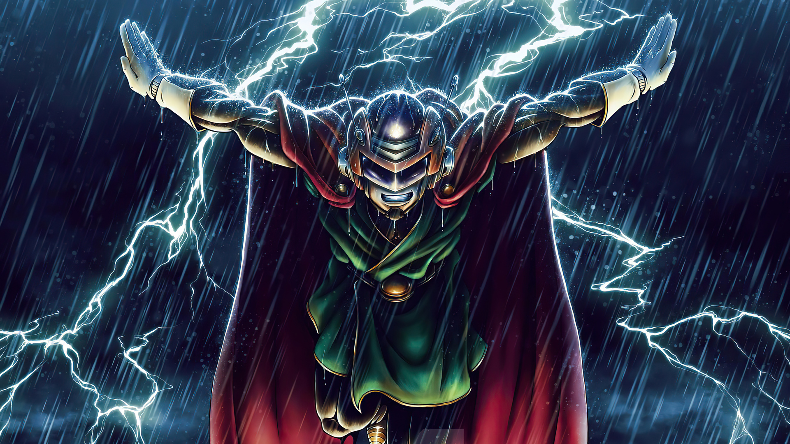

Why is the next Dragon Ball Super movie called "Super Hero"?
Film will invoke more "superhero vibes" than previous installments
According to Dragon Ball Super manga executive editor Akio Iyoku, the film will invoke more "superhero vibes" than previous installments, and that creator Akira Toriyama is more focused on the superhero aspects in this film. However, Z-warriors in Dragon Ball are not usually portrayed as superheroes in the traditional sense, despite their incredible powers, so the title makes fans wonder how the film will bring those "superhero vibes".
However, there's one Z-Warrior who played a superhero role in the past. Seven years after the Cell games, Gohan embraced the superhero life when he took the alter ego of "Great Saiyaman".
Piccolo and Pan, two of the most important characters to Gohan are already confirmed to appear in the film, so there's a strong chance that the movie's "Super Hero" title refers to the return of Gohan's Great Saiyaman alter-ego.
The official Dragon Ball website also shared a blurb, teasing Gohan's big battle in the movie.
"With their capes fluttering, Gamma 1 and Gamma 2 can be seen striking a couple of slick poses! Plus, there are some all-new original characters who we'll just have to wait and find out more about, no matter how tough that may be! Wearing his uniform and taking center stage is Gohan, who looks to be gearing up for the fight of a lifetime alongside Piccolo, Goku, Vegeta, and Pan!"
The blurb makes it clear that Dragon Ball Super: Super Hero is super hero-themed. We already know that Gohan has a super hero alter-ego known as the Great Saiyaman, but it looks like the character is going back to his roots as he is seen dressed in his purple gi outfit.
Source: epicstream.com
Back to news